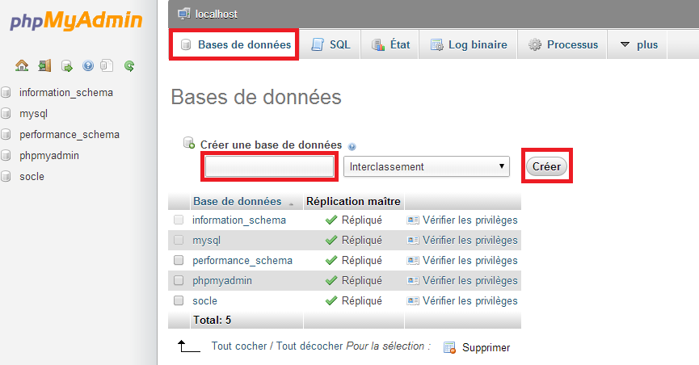

Programmation web
Langage de programmation
4 langages principaux
- HTML
- CSS
- PHP
- SQL
HTML
Langage structurel
TD 1
Formulaire HTML
- Input : Nom
- Input : Prenom
- Input : Submit
Correction
Formulaire HTML
<form method="POST" action="valid.php">
<input type="text" name="nom"/>
<input type="text" name="prenom"/>
<input type="submit" name="save"/>
</form>
<form method="POST" action="valid.php">
<input type="text" name="nom"/>
<input type="text" name="prenom"/>
<input type="submit" name="save"/>
</form>
CSS
Langage de présentation
PHP
Langage interprété
TD 1
Récupération des données
- Analyse du Formulaire
- Récupération des données
- Validation des données
- Gestion des erreurs
Correction
Analyse du Formulaire
- Method : Post
- Action : valid.php
- Input name : nom
- Input name : prenom
Récupération des données
$data = $_POST;
Validation des données
- Vérification du contenu de $data
- Vérification du contenu des éléments input
- En cas d'erreur ajouter dans un tableau un message
Vérification du contenu de $post
if (empty($data)){
$errMessages[] = "Aucun formulaire";
}
Vérification de l'existence
if (!isset($data['nom']) OR empty($data['nom'])) {
$errMessages[] = "Nom Obligatoire";
}
Vérification du contenu de l'élément
if (preg_match('/[^A-Za-z]/', $data['nom'])) {
$errMessages[] = "Nom Incorrect";
}
SQL
Langage de Base de données
Accès phpMyAdmin pma.project.dev
Crée une base de données avec phpMyAdmin
Crée une table avec phpMyAdmin
Crée une base de données avec phpMyAdmin
Crée une table "utilisateur" avec phpMyAdmin
- ID (int PRIMARY AUTO_INCREMENT)
- nom (varchar)
- prenom (varchar)
Plusieurs possiblité avec PHP pour se connecter à une BDD
- Les fonctions mysql_*
- Les fonctions mysqli_*
- PDO (PHP Data Objects)
Les fonctions mysql_*
Connection à une BDD
resource mysql_connect ($server, $username, $password);
Selection d'une BDD
bool mysql_select_db ($database_name);
Execution d'une Query
mixed mysql_query ($query);
Récupération des erreurs
string mysql_error ();
Ferme la connexion MySQL
string mysql_close ();
SQL INSERTION
Insérer une ligne en spécifiant toutes les colonnes
INSERT INTO table VALUES ('valeur 1', 'valeur 2', ...)Source : http://sql.sh/cours/insert-into
SQL INSERTION
Insérer une ligne en spécifiant seulement les colonnes souhaitées
INSERT INTO table (nom_colonne_1, nom_colonne_2, ...
VALUES ('valeur 1', 'valeur 2', ...)Source : http://sql.sh/cours/insert-into
SQL INSERTION
Insertion de plusieurs lignes à la fois
INSERT INTO client (prenom, nom)
VALUES
('Rebecca', 'Armand'),
('Aimee', 'Hebert'),
('Marielle', 'Ribeiro'),
('Hilaire', 'Savary');Source : http://sql.sh/cours/insert-into
TD 1
Faire une insertion en BDD avec les élements du formulaire
- mysql_connect ($server, $username, $password);
- mysql_select_db ($database_name);
- $query = "INSERT INTO table VALUES ('valeur 1', 'valeur 2', ...)";
- mysql_query ($query);
- mysql_error ();
- mysql_close ();
Les fonctions mysqli_*
Connection à une BDD
Style procédural
$link = mysqli_connect ($server, $username, $password, $database_name);Style orienté objet
$mysqli = new mysqli('localhost', 'fake_user', 'my_password', 'my_db');
Récupération des erreurs de connection
Style procédural
$link = @mysqli_connect('localhost', 'fake_user', 'my_password', 'my_db');
if (!$link) {
die('Erreur de connexion : ' . mysqli_connect_error());
}Style orienté objet
$mysqli = @new mysqli('localhost', 'fake_user', 'my_password', 'my_db');
if ($mysqli->connect_error) {
die('Erreur de connexion : ' . $mysqli->connect_error);
}
Execution d'une Query
Style procédural
$link = mysqli_connect ($server, $username, $password, $database_name);
mysqli_query($link, $query);Style orienté objet
$mysqli = new mysqli($server, $username, $password, $database_name);
$mysqli->query($query);
Récupération des erreurs
Style procédural
if (!mysqli_query($link, "SET a=1")) {
printf("Message d'erreur : %s\n", mysqli_error($link));
}Style orienté objet
if (!$mysqli->query("SET a=1")) {
printf("Message d'erreur : %s\n", $mysqli->error);
}
TD 1
Faire une insertion en BDD avec les élements du formulaire avec mysqli_*
$mysqli = new mysqli($server, $username, $password, $database_name);
$query = "INSERT INTO table VALUES ('valeur 1', 'valeur 2', ...)";
$mysqli->query ($query);
$mysqli->error;
$mysqli->close();
Les fonctions PDO
(PHP Data Objects)
Création de l'objet PDO
$dbh = new PDO($dsn, $user, $password);
DSN (Data Source Name)
C'est une structure de donnée utilisée pour décrire une connexion à une source de donnée.
Exemple de DSN Mysql :
$dsn = "mysql:dbname=MyDataBase;host=127.0.0.1";Exemple de DSN Java :
jdbc:sybase://127.0.0.1:700/MyDataBase
Préparation d'une requète
$sql = "INSERT INTO utilisateurs (first_name, last_name) VALUES (:first_name, :last_name)";
$sth = $dbh->prepare($sql);
Execution de requète
$sth->execute(array(
':first_name' => $first_name,
':last_name' => $last_name
));
TD 1
Faire une insertion en BDD avec les élements du formulaire avec PDO
$dsn = "mysql:dbname=MyDataBase;host=127.0.0.1";
$dbh = new PDO($dsn, $user, $password);
$sql = "INSERT INTO utilisateurs (first_name, last_name)
VALUES (:first_name, :last_name)";
$sth = $dbh->prepare($sql);
$sth->execute(array(
':first_name' => $first_name,
':last_name' => $last_name
));
$dbh->errorInfo();
SQL SELECT
Commande basic
SELECT nom_du_champ FROM nom_du_tableau
Obtenir plusieurs colonnes
SELECT prenom, nom FROM client
Obtenir toutes les colonnes d’un tableau
SELECT * FROM client
Ordre des commandes du SELECT
SELECT *
FROM table
WHERE condition
ORDER BY expression
LIMIT count
OFFSET start
SQL WHERE
La commande WHERE dans une requête SQL permet d’extraire les lignes d’une base de données qui respectent une condition. Cela permet d’obtenir uniquement les informations désirées.
SELECT nom_colonnes FROM nom_table WHERE condition
Opérateurs de comparaisons
| = | Égale |
| <> | Pas égale |
| != | Pas égale |
| > | Supérieur à |
| < | Inférieur à |
| >= | Supérieur ou égale à |
| <= | Inférieur ou égale à |
| IN | Liste de plusieurs valeurs possibles |
| BETWEEN | Valeur comprise dans un intervalle donnée |
| LIKE | Recherche en spécifiant le début, milieu ou fin d'un mot. |
| IS NULL | Valeur est nulle |
| IS NOT NULL | Valeur n'est pas nulle |
TD 1
Faire une sélection en BDD avec PDO
Afficher le résultat en dessous du formulaire
SELECT nom_du_champ FROM nom_du_tableau
$dbh = new PDO(...);
$sth = $dbh->prepare($sql);
$sth->execute();
$result = $sth->fetchAll();
print_r($result);
SELECT nom_du_champ FROM nom_du_tableau$dbh = new PDO(...);
$sth = $dbh->prepare($sql);
$sth->execute();
$result = $sth->fetchAll();
print_r($result);
TD 2
A la suite du formulaire crée un 2éme formulaire permettant la recherche d'un utilisateur. Ne faire la recherche que sur les champs saisie.
- INPUT nom
- INPUT prenom
Utiliser LIKE http://sql.sh/cours/where/like